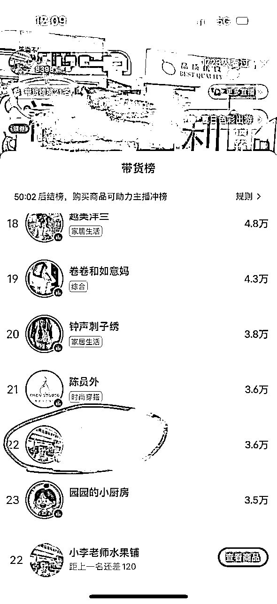
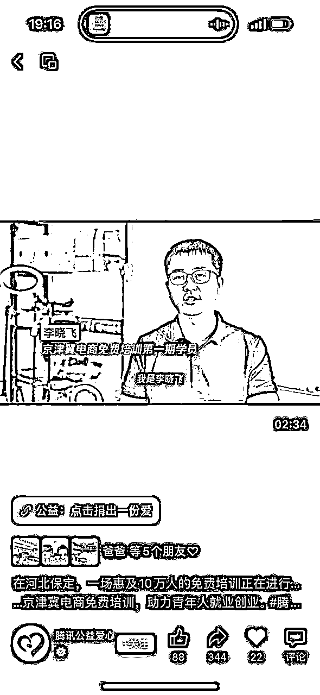
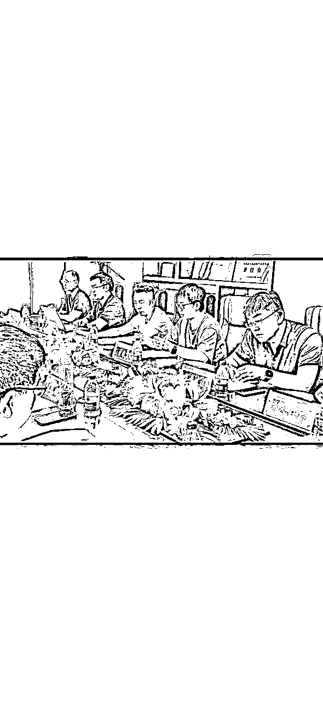
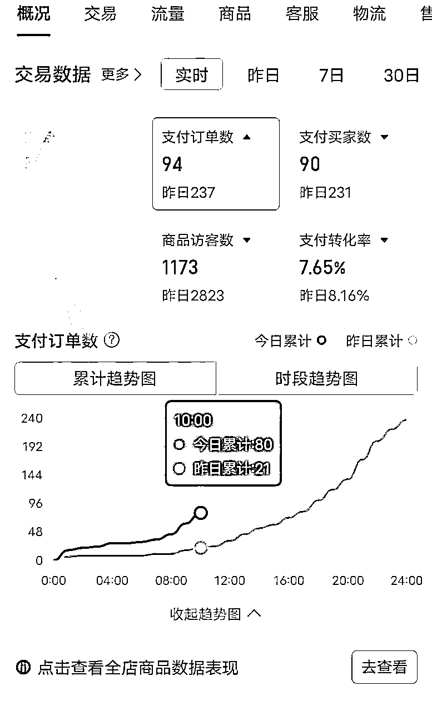
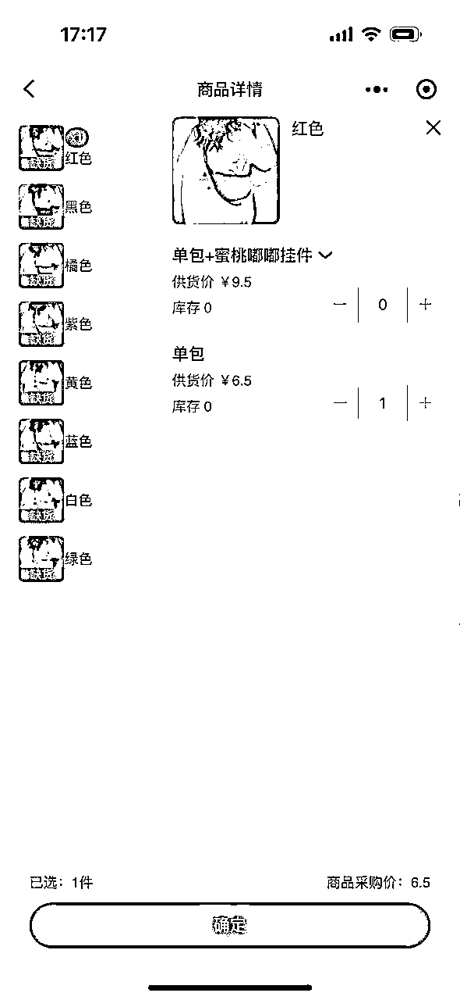
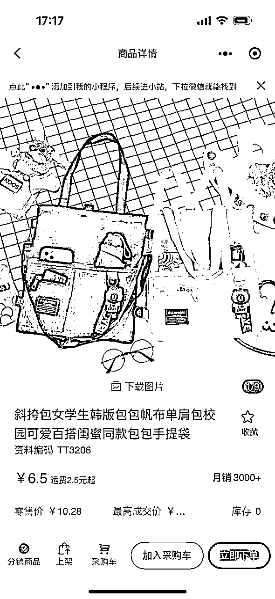
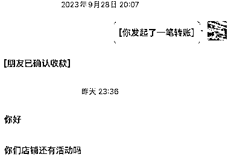
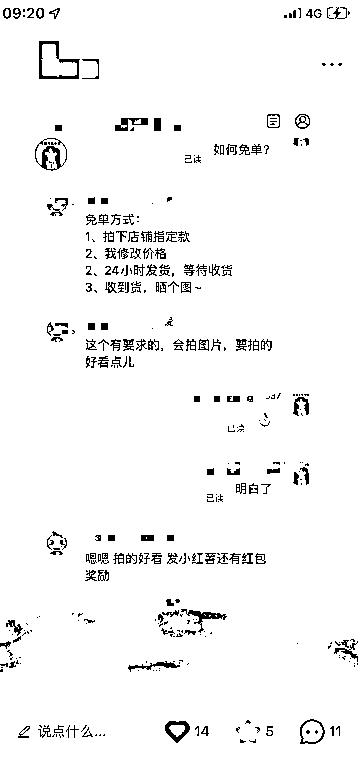
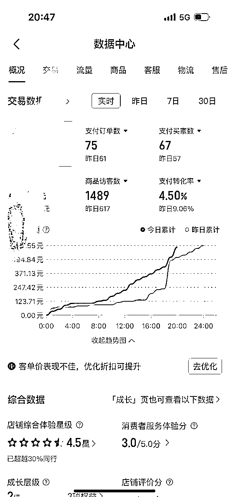

来源：https://rd78y95zlu.feishu.cn/docx/JKYadCga4oCVtnxDoBzcwUXknEc
大家好，我是小李哥。分享下最近半年时间的经历。
最大收获是去朋友那学习，他一天最高单量接近2万单。
近距离体会下河北电商的疯狂（箱包PDD太卷了）。
新人直播取得还不错成绩，主要原因是选品好，符合小红书人群特点+本身品有吸引力。
场景模仿其他主播搭建。话术自己去多看其他直播。有场控搭配最好，提高现场氛围。

这次机会是批发市场+政 fu 组织培训活动，能脱颖而出获得一些“名”，并不是我能力多强，是相比线下的人能力强。
找政 fu 要资源、背书、贷款优惠政策这些比较容易


你自己赚到“钱”再去培训别人，现在能力范围、精力还做不到
（以下部分观点受我朋友启发，一天最高接近 2 万单）
单量是为了满足虚荣心，高利润才是为了赚钱。
传言“河北做电商不是为了赚钱，为了一天发几千单快递，有面儿”。
确实，这边价格战太狠，睁不开眼，7 元一个包包还包邮。打价格战也有值得学习的地方，比如控制成本，电商本质是供应链，供应链在质量前提下控制成本。

单量提升，商品成本、快递费、人员打包场地成本都会降低。
通过低价+PDD 可快速提高单量。低价在 PDD 非常好使，价格低就出单。和直播带货不一样，他是有持续性的出单。
我们快递费在 1.5 左右，合作的再加 1 元人工包装成本。
从价格战的维度选品，看好一个品思考：假设这品起量后，能否干的过对方？干对方是否有意义？
比如每天 10 单快递费 6、商品成本 8 元、人员成本 3 元，综合成本是 17 元，结果竞品售价才 14 元。是不是没得玩干不过？
那如果每天 1000 单了，快递费降到 1.5、商品成本 7 元、人员成本 1 元，综合成本是 9.5 元。
拿这个价格和竞品比，如果有利润空间可以玩，没有空间果断放弃。
同时要观察对手的销量，确保市场空间比较大，如果对手一天也只卖 50 单，那就算了。
当然你有资本可以把 1000 单换成 1 万单来计算成本。
到目标单数后和各方谈判价格，降低成本。商品链接权重起来的，慢慢提高利润，实现盈利。
3.1 商品成本低
从产业链带找厂家，厂家各原料成本低你拿货价也低。
拿包包来说，价格从高到低，广州->>河北白沟->>河北高碑店市新城镇。
一款新包出来，基本路线是广州价格 50，白沟隔几天干到 40，新城隔天到 30。
最好找小作坊，全家老小一起上，他对利润要求不高且量大后你有话语权，可以压价压货款。


3.2 物流成本、人工成本
量大自然降了
3.3 亏钱实现低价
前期，亏钱是为了快速达到你的目标订单，搭建好基本盘子。
比如一天 300 单一单亏 4 元，亏 1200 元，但一天 1000 单可能就不亏了，各成本下来了。
后期，新起链接可以亏钱一段时间，但要看提升利润后出单的情况，观察多久能回本。
其实亏不了多少钱，一单亏 1 元，一天 100 单才 100 元。pdd 单价低 1 元优势比较明显了。
我有个化妆包报活动每单亏 0.5 元，一天 100 多单后，涨价开投产比，利润在 30%左右，每天 10 来单浮动，不用咋管。
另外是多链接多商品多店铺上架，大力出奇迹，只上一个链接不行。
3.4 降低 s 单成本（5 元 2-3 单成本甚至更低）
不限渠道（淘宝 pdd 视频号小红书都可）：通过免单小礼品让用户完成指定任务，99%真实用户。

具体操作方式：

以上就是如何降低成本的方式。
要有一种心态：你让他起量便起，让他下降就降。千万不要被系统牵着走。
比如我每个商品上三个不同链接，两个店铺操作。
今天数据不好，我想要提高数据，仍几张优惠券，只要转化率比昨天好，第二天流量就比今天流量多。
流量涨不动时候，我想要利润，把优惠券金额减少，利润就有了，单子少无所谓，赚钱就可以。
这个链接有权重后，基本不用管。一周维度看，转化率低，再扔几张券拉一下。
总结：你是上帝，平台是服务于你的，可能会做些动作迎合平台，但迎合是为了让他更好的给你服务。
比如周六日数据好，提前周五开始扔券。
比如寒暑假开学双肩包买的很好，夏天包包旺季，夏天女孩衣服没口袋，小包包畅销。换季的时候也是一波。
之前干水果流量、选货、打包发货、运营、售后都需要你做，精力分散。做包包后只需要销售就可以。
对接上【聚水潭】系统，真的太爽，完美解决无货源问题，不需要你二次拍单之类的，基本 24 小时内发出。
简单说下功能：商品一键多店铺货、订单后台自动同步、售后自动处理、实时查看订单利润。
app 端、网页端、小程序端都可操作。免费不花钱。只是上面商家还不够多。
很多是自己原因。
不要给自己设置局限、对于付费不要吝啬、不要止步眼前不去学习最新的玩法、不要受自己过去经验的影响、不要看不起别人比较 low 的玩法、不要心急、不要遇到困难去放弃
要突破自己的局限、要敢于付费、要学习最新的玩法、要变成小白空杯心态、要仔细琢磨别人的玩法、要有耐心、有多尝试，遇到反馈不好要勇于坚持
多链接同款 一个店 3 个链接
高价格、sku 文字、图片优化
sku 价格设置好，利润款、平价款、引流款
卡高投产（不是高投产就不开）
限时限量促销
【选一种多种都可】扔优惠券（限定数量）、开搜索也行，快速定位人群、不扔券报名参加各种活动也可
看数据访客情况，效果不好果断放弃
数据好没转化，做几个评价
数据订单持平后，刷大额坑产，看能否继续提高
没法提高订单数后，适当涨价，拿利润
测款大于选款，大于培养款。只锦上添花，不是雪中送炭。只给优秀学生更好的资源，而不是使劲提拔差学生
通过价格和补单（做平价）把转化率提升上去。不是靠评价和销量打爆，为了提高转化率

4、不是想着非要怎么样才行，而是在数据好、趋势好的情况下，努力去做。
5、发立减券会计入最低价，关注券不会计入。
6、sku 设置，引流品低于成本价，一般买的人少，吸引用户点击进来。畅销款（提高转化大部分人都会买的，薄利）、利润款（突出质量好、尺寸大、划算之类的）
7、一个电脑可以登陆 N 多账号，不像淘宝有各种限制。一个手机也可以切换 N 多账号
8、PDD 有很多问题比如仅退款之类的，但通过几率看这个事情，仅退款算到成本里。如果利润空间可以就继续做。
PDD 坑很多，入坑需谨慎！！！
1、创业找合伙人，发现人不合适要第一时间暂停，不要害怕重新开始找人，第一时间发现就断绝一定是成本最低的。比如有些事情刻意隐瞒、同一件事情沟通过后反复出现问题。
2、能否放大问题。取得效果的方式要尽可能简单，傻瓜式。
3、前期会尝试各种项目，不要把自己局限住“什么都干不好、什么都不精”这个思维里，你在找方向做各种尝试，找到合适的项目使劲干。
4、对于供应链，在 PDD 上把订单提升上去，降低成本后，在淘宝或者其他平台去赚钱。
下一步尝试短视频带货，等有成绩再来分享。